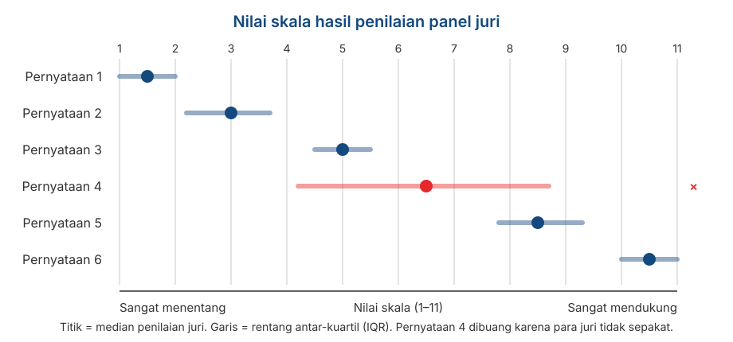

Format Respons II: Thurstone, Situational Judgement Test, dan Forced-Choice
Penyusunan Skala Psikologi
2026-08-19
Outline
- Tiga asumsi pengukuran yang selama ini diterima begitu saja
- Thurstone: item yang sudah dikalibrasi lebih dulu oleh panel
- Situational Judgement Test: mengukur penilaian atas situasi, bukan pernyataan tentang diri sendiri
- Forced-choice: ketika partisipan dipaksa memilih, dan skornya menjadi ipsatif
- Kenapa data ipsatif berlawanan dengan hampir semua yang kita pelajari di Pertemuan 3
3️⃣ asumsi yang selama ini diterima begitu saja
Yang belum dijelaskan di pertemuan sebelumnya
Ketika kita memakai skala Likert, secara implisit kita menerima 3️⃣ hal:
Semua item berbobot sama. Item nomor 1 dan nomor 7 sama-sama bernilai maksimum 5 poin.
Item berupa pernyataan tentang diri sendiri, secara abstrak. “Saya orang yang teliti.”
Setiap item dijawab secara terpisah. Menyetujui satu item tidak berarti memaksa Anda menolak item lain.
Yang kita bahas hari ini
Tiga format yang masing-masing menolak ketiga asumsi ini.
Peta hari ini
| Format | Yang ditolak | Yang diasumsikan |
|---|---|---|
| Thurstone | Bobot item yang sama | Item terkalibrasi di sepanjang kontinum |
| SJT | Pernyataan diri yang abstrak | Konteks dan penilaian yang lebih konkret |
| Forced-choice | Kebebasan menjawab tiap item | Menangkal problem social desirability |
Perlu diingat
Ketiganya kelihatannya menarik secara konseptual, tetapi jauh lebih sulit dikembangkan daripada Likert, dan dua di antaranya berlawanan dengan asumsi yang kita bangun di Pertemuan 3.
Thurstone
Analogi garpu tala
Sebuah garpu tala dirancang bergetar pada frekuensi tertentu. Kalau ada nada dengan frekuensi yang sama di dekatnya, garpu itu ikut bergetar. Kalau frekuensinya berbeda, ia diam.
Bayangkan sederet garpu tala yang tersusun dari frekuensi rendah ke tinggi. Untuk mengetahui frekuensi sebuah nada, Anda cukup melihat garpu mana yang bergetar.
Skala Thurstone bekerja persis seperti ini: tiap item “disetel” untuk merespons level atribut tertentu.
Tips
Bandingkan dengan Likert, di mana semua item pada dasarnya adalah detektor yang sama dan yang berbeda hanya derajat pilihan responnya.
Bagaimana skala Thurstone dibuat
Kumpulkan banyak pernyataan tentang objek sikap — biasanya puluhan hingga ratusan.
Minta anggota panel menempatkan tiap pernyataan ke dalam 11 tumpukan, dari paling bertentangan sampai paling mendukung. Anggota panel tidak diminta pendapat pribadinya; mereka diminta menilai posisi pernyataannya.
Hitung median penilaian anggota panel untuk tiap pernyataan. Itulah nilai skala (scale value) pernyataan tersebut.
Hitung sebaran penilaian anggota panel (rentang antar-kuartil). Pernyataan yang juri-jurinya tidak sepakat berarti ambigu, dan dibuang.
Pilih pernyataan yang tersisa sedemikian rupa sehingga nilai skalanya tersebar merata di sepanjang kontinum.
Seperti apa hasilnya

Membaca ilustrasi sebelumnya
Tiap pernyataan punya satu angka yang menandai posisinya di kontinum. Angka inilah yang mencerminkan kalibrasinya.
Pernyataan 4 punya rentang antar-kuartil yang sangat lebar: para anggota panel tidak sepakat pernyataan itu ada di posisi mana. Pernyataan seperti ini dibuang, sebagus apapun penulisan kalimatnya.
Pernyataan yang lolos tersebar dari ujung ke ujung.
Perhatikan yang baru saja terjadi
Kita sudah menentukan “tingkat kesulitan” tiap item sebelum partisipan mengisinya. Ini adalah sesuatu yang tidak bisa dilakukan dengan CTT.
Cara partisipan menjawab dan cara menskornya
Responden hanya diminta setuju atau tidak setuju (ya/tidak) pada tiap pernyataan.
Skor responden adalah rata-rata nilai skala dari pernyataan yang ia setujui.
Jadi orang yang menyetujui pernyataan dengan nilai skala 8.5 dan 10.5 mendapat skor 9.5 — tanpa perlu menjumlahkan apa pun.
Bedanya mendasar dengan Likert
Pada Likert, informasi ada pada derajat jawaban. Pada Thurstone, informasi ada pada item mana yang disetujui — jawabannya sendiri cuma ya atau tidak.
Kenapa Thurstone jarang dipakai
Beban kerjanya besar. Anda perlu panel juri sebelum satu pun data responden dikumpulkan.
Menemukan item yang benar-benar “beresonansi” pada level tertentu jauh lebih sulit daripada membayangkannya.
Nunnally (1978), sebagaimana dikutip DeVellis, menilai bahwa masalah praktisnya sering lebih besar daripada keuntungannya, kecuali kalau peneliti benar-benar membutuhkan kalibrasi semacam itu.
Dan ada konsekuensi teoretisnya
Seperti Guttman di Pertemuan 4, item Thurstone tidak berbobot sama. Artinya model parallel dan tau-equivalent dari Pertemuan 3 tidak berlaku, dan \(\alpha\) tidak bisa dipakai begitu saja.
Tetapi gagasannya hidup di dua tempat
Di dalam IRT. DeVellis mencatat bahwa metode berbasis IRT berbagi tujuan yang sama dengan Thurstone. Parameter kesulitan \(b\) yang kita lihat di Pertemuan 3 pada dasarnya adalah nilai skala Thurstone — bedanya, IRT mengestimasinya dari data responden, bukan dari panel juri.
Di dalam proyek Anda sendiri. Di Pertemuan 11, Anda akan meminta panel ahli menilai relevansi tiap item, lalu menghitung Content Validity Index.
Perhatikan kemiripannya
Prosedur CVI adalah logika Thurstone yang diterapkan pada relevansi isi, bukan pada posisi di kontinum. Panel juri, penilaian per item, dan pembuangan item yang tidak disepakati — semuanya sama.
Jadi Anda akan mengerjakan versi Thurstone tanpa menyadarinya.
Situational Judgement Test
Bentuknya
Responden diberi skenario yang realistis, lalu diminta menilai beberapa kemungkinan tindakan.
Yang diukur bukan pernyataan tentang diri sendiri, melainkan penilaian dalam situasi konkret.
Berakar pada tes seleksi personel sejak 1940-an, dan populer kembali sejak Motowidlo dkk. (1990) menyebutnya sebagai low-fidelity simulation.
Contoh
Situasi. Anda memimpin kelompok tugas beranggotakan lima orang. Dua hari sebelum tenggat, satu anggota memberi tahu bahwa bagiannya belum dikerjakan sama sekali karena ada urusan keluarga.
Seberapa efektif tiap tindakan berikut?
| Tindakan | ||
|---|---|---|
| A | Mengerjakan sendiri bagian itu agar tenggat terkejar | 1–5 |
| B | Membagi bagian tersebut ke anggota lain yang sudah selesai | 1–5 |
| C | Meminta perpanjangan waktu kepada dosen | 1–5 |
| D | Menyerahkan tugas apa adanya dan menuliskan siapa yang tidak berkontribusi | 1–5 |
Perhatikan perbedaannya
“Apa yang akan Anda lakukan?”
Mengukur kecenderungan perilaku.
Lebih dekat ke kepribadian.
Lebih rawan dipoles responden.
“Apa yang sebaiknya dilakukan?”
Mengukur pengetahuan tentang tindakan yang efektif.
Lebih dekat ke kemampuan kognitif.
Lebih tahan terhadap pemolesan.
Ini perbendaan ynag mendasar
Ployhart & Ehrhart (2003) menunjukkan bahwa mengganti instruksi respons mengubah properti psikometrik tesnya — reliabilitas maupun konstruk yang terukur.
Instruksi respons harus Anda tetapkan lebih dulu, bukan dipilih belakangan.
Cara menskornya
Berbasis konsensus — kunci jawabannya diambil dari rata-rata penilaian sampel besar.
Berbasis ahli — panel praktisi menentukan mana tindakan yang efektif.
Berbasis teori — kunci diturunkan dari teori tentang konstruk yang diukur.
Note
Perhatikan bahwa dua yang pertama membutuhkan panel, persis seperti Thurstone dan seperti CVI di Pertemuan 11.
Kelebihannya
Konteks yang konkret. Responden tidak diminta menggeneralisasi tentang dirinya, melainkan menanggapi situasi tertentu — ini menghindari sebagian masalah akses introspektif dari Pertemuan 2.
Tampak relevan bagi responden, sehingga lebih mudah diterima dalam konteks seleksi.
Prediksi kinerja yang cukup baik. McDaniel dkk. (2001) menunjukkan SJT memprediksi kinerja kerja secara memadai.
Masalah psikometriknya
SJT hampir selalu multidimensional. Satu skenario bisa sekaligus melibatkan pengetahuan, kepribadian, dan penalaran.
Akibatnya, konsistensi internalnya sering rendah.
Ini melanggar asumsi unidimensionalitas dari Pertemuan 2, dan membuat model CTT di Pertemuan 3 tidak cocok diterapkan apa adanya.
Kesalahan yang sering dilakukan orang
Melaporkan Cronbach’s alpha untuk sebuah SJT lalu menyimpulkan tesnya buruk karena angkanya rendah.
\(\alpha\) mengasumsikan semua item digerakkan oleh satu variabel laten yang sama. Pada SJT, asumsi itu memang tidak dimaksudkan untuk terpenuhi. Koefisien yang salah menghasilkan kesimpulan yang salah, bukan alat ukur yang buruk.
Forced-choice
Masalah yang ingin dipecahkan
Ingat asumsi keenam dari Pertemuan 2: responden mau melaporkan keadaannya apa adanya.
Pada konteks seleksi kerja, asumsi itu jelas tidak realistis. Semua orang punya alasan untuk tampil baik.
Dengan format Likert, responden bisa memberi nilai tinggi pada semua pernyataan yang terdengar bagus.
Gagasan intinya
Kalau responden dipaksa memilih di antara dua pernyataan yang sama-sama menarik, ia tidak bisa lagi sekadar menyetujui semuanya. Ia harus mengungkapkan mana yang lebih menggambarkan dirinya.
Bentuknya
Pilih satu pernyataan yang paling menggambarkan diri Anda:
| (a) | Saya suka menyelesaikan pekerjaan tepat waktu. |
| (b) | Saya suka membantu orang lain menyelesaikan masalahnya. |
Kedua pernyataan sama-sama positif. Tidak ada jawaban yang jelas “lebih baik”.
Keduanya mengukur konstruk yang berbeda — di sini kira-kira ketelitian dan keramahan.
Variasi lain: blok berisi tiga atau empat pernyataan, dengan instruksi “paling menggambarkan” dan “paling tidak menggambarkan” saya.
Syarat yang sering dilupakan
Pasangan pernyataan harus disetarakan tingkat kemenarikannya lebih dulu — dan ini membutuhkan penelitian pendahuluan tersendiri.
Kalau tidak disetarakan, format ini tidak menyelesaikan apa pun: responden akan tetap memilih yang terdengar lebih baik.
Menyetarakan kemenarikan sama saja dengan mengkalibrasi item — sekali lagi, mirip dengan Thurstone.
Ipsativitas
Risiko yang harus diterima
Setiap kali responden memilih satu pernyataan, ia otomatis tidak memilih yang lain.
Akibatnya, total skor semua skala menjadi konstan untuk setiap responden. Kalau skor satu skala naik, skor skala lain harus turun.
Data dengan sifat ini disebut ipsatif: skornya bermakna di dalam diri seseorang, bukan antar-orang.
Kalimat yang perlu Anda ingat
Pada data ipsatif, skor menjawab pertanyaan “dari semua hal ini, mana yang paling menonjol pada diri saya?” — bukan “seberapa banyak sifat ini saya miliki dibandingkan orang lain?”
Kenapa ini merusak analisis
Karena skor totalnya dipaksa konstan, korelasi antar-skala dipaksa menjadi negatif — bahkan kalau konstruk yang sesungguhnya sama sekali tidak berhubungan.
Untuk instrumen ipsatif dengan \(k\) skala, rata-rata korelasi antar-skalanya adalah:
\[\bar{r} = -\frac{1}{k-1}\]
| Jumlah skala (\(k\)) | Rata-rata korelasi yang dipaksakan |
|---|---|
| 3 | −0,50 |
| 5 | −0,25 |
| 10 | −0,11 |
Warning
Angka-angka itu muncul dari formatnya, bukan dari proses psikologis partisipannya.
Akibat lanjutannya
Perbandingan antar-orang menjadi tidak memungkinkan. Skor 8 pada skala ketelitian milik A tidak bisa langsung dibandingkan dengan skor 8 milik B.
Analisis faktor menjadi menyesatkan, karena struktur korelasinya sudah diganggu lebih dulu oleh formatnya.
Koefisien reliabilitas klasik jadi sulit ditafsirkan — model CTT di Pertemuan 3 mengandaikan skor yang bebas bergerak, dan di sini skornya tidak bebas.
Kesimpulan praktisnya
Instrumen ipsatif tidak boleh dipakai untuk seleksi, pemeringkatan, atau perbandingan antar-individu — padahal justru untuk itulah instrumen semacam ini sering dijual.
Ada jalan keluarnya
Brown & Maydeu-Olivares (2011) menunjukkan bahwa dengan pemodelan IRT, skor normatif bisa dipulihkan dari respons forced-choice.
Pendekatannya disebut Thurstonian IRT, karena berangkat dari model Thurstone tentang perbandingan berpasangan.
Jadi format ini tetap bisa dipakai — asalkan analisisnya memakai model yang tepat, bukan penjumlahan sederhana.
Perhatikan siapa yang muncul lagi
Kita membuka hari ini dengan Thurstone, dan menutupnya dengan Thurstone. Ide Thurstone di tahun 1920-an itu ternyata yang menjadi solusi untuk masalah ini.
Apa yang realistis untuk proyek Anda
Ketiganya tidak realistis
Thurstone — tidak realistis. Anda perlu panel juri terpisah sebelum pengambilan data, dan waktunya tidak ada.
SJT — tidak realistis untuk semester ini. Menulis skenario yang baik dan menyusun kunci jawabannya adalah proyek tersendiri.
Forced-choice — tidak realistis. Analisis yang benar untuk data ipsatif berada di luar cakupan mata kuliah ini.
Jadi kenapa kita membahasnya?
Karena Anda akan menemui ketiganya dalam praktiknya, terutama SJT dan forced-choice, yang banyak dipakai dalam asesmen dan seleksi kerja di Indonesia.
Yang perlu Anda pelajari hari ini bukan kemampuan membuatnya, melainkan kemampuan menilai apakah alat semacam ini dipakai secara benar.
Demo dan latihan
Bagian 1: menjadi juri Thurstone
Objek sikap: penggunaan AI untuk mengerjakan tugas kuliah.
Nilai tiap pernyataan berikut dari 1 (sangat menentang) sampai 11 (sangat mendukung). Nilai posisi pernyataannya, bukan pendapat pribadi Anda.
- Memakai AI untuk tugas kuliah adalah kecurangan, apa pun alasannya.
- AI sebaiknya hanya dipakai untuk memeriksa tata bahasa.
- AI boleh dipakai mencari referensi, asalkan tulisannya tetap karya sendiri.
- Memakai AI sama saja dengan memakai kalkulator: sekadar alat bantu.
- Mahasiswa yang tidak memakai AI akan tertinggal.
- Tugas sebaiknya dinilai dari hasil akhirnya saja, tidak peduli bagaimana dibuat.
Bagian 1: yang perlu dihitung dan didiskusikan
Hitung median penilaian kelas untuk tiap pernyataan. Itulah nilai skalanya.
Hitung rentang antar-kuartil tiap pernyataan. Mana yang paling tidak disepakati?
Pernyataan mana yang akan Anda buang, dan kenapa?
Apakah pernyataan yang tersisa tersebar merata di sepanjang kontinum, atau menumpuk di satu sisi?
Tip
Perhatikan bahwa Anda baru saja menjalankan prosedur yang sama dengan yang akan Anda pakai untuk CVI di Pertemuan 11 — hanya kriterianya yang berbeda.
Bagian 2: menyetarakan kemenarikan
Perhatikan tiga pasangan forced-choice berikut. Mana yang sudah disetarakan dengan baik, mana yang belum?
Pasangan 1 (a) Saya orang yang teratur. (b) Saya orang yang mudah bergaul.
Pasangan 2 (a) Saya suka merencanakan segala sesuatu. (b) Saya kadang menunda pekerjaan.
Pasangan 3 (a) Saya menikmati bekerja sendirian. (b) Saya menikmati bekerja dalam tim.
Note
Waktu: 10 menit. Untuk pasangan yang belum setara, tuliskan bagaimana Anda memperbaikinya.
Rangkuman
Enam poin utama
Thurstone mengkalibrasi item lebih dulu lewat panel juri, sehingga item punya posisi yang diketahui di kontinum.
Nilai skala Thurstone adalah nenek moyang parameter kesulitan dalam IRT, dan prosedur jurinya adalah nenek moyang CVI.
SJT mengukur penilaian dalam konteks, dan hampir selalu multidimensional — sehingga \(\alpha\) yang rendah bukan tanda kegagalan.
Instruksi respons pada SJT mengubah konstruk yang terukur. “Akan saya lakukan” dan “sebaiknya dilakukan” bukan hal yang sama.
Forced-choice melindungi dari social desirability, tetapi menghasilkan data ipsatif.
Data ipsatif memaksa korelasi antar-skala menjadi negatif dan membuat perbandingan antar-orang tidak sah.
Untuk Pertemuan 6
Setelah lima pertemuan membicarakan konsep dan format, kita mulai menghitung: reliabilitas.
- Rumus Spearman-Brown yang sudah dua kali kita tunda.
- Cronbach’s alpha dan asumsi tau-equivalent yang jarang terpenuhi.
- Koefisien omega dan kenapa umumnya lebih tepat.
- Test-retest, split-half, dan konsistensi internal: tiga pertanyaan yang berbeda, bukan tiga cara menghitung hal yang sama.
- Koefisien mana yang sebaiknya Anda laporkan di laporan proyek.
Persiapan
Baca DeVellis & Thorpe (2022), Bab 3. Kalau ingin melihat versinya dalam praktik, bab Reliability pada Bikos menunjukkan berbagai koefisien secara berdampingan.
Ada pertanyaan❓

Catatan
- Paparan disusun dengan menggunakan dan Quarto dengan template dari UNAIR Theme.
- Kontak saya via amelia.zein@psikologi.unair.ac.id
Rujukan
Brown, A., & Maydeu-Olivares, A. (2011). Item response modeling of forced-choice questionnaires. Educational and Psychological Measurement, 71(3), 460–502.
DeVellis, R. F., & Thorpe, C. T. (2022). Scale development: Theory and applications (5th ed.). SAGE.
Edwards, A. L. (1959). Edwards Personal Preference Schedule manual. Psychological Corporation.
Hicks, L. E. (1970). Some properties of ipsative, normative, and forced-choice normative measures. Psychological Bulletin, 74(3), 167–184.
McDaniel, M. A., Morgeson, F. P., Finnegan, E. B., Campion, M. A., & Braverman, E. P. (2001). Use of situational judgment tests to predict job performance. Journal of Applied Psychology, 86(4), 730–740.
Motowidlo, S. J., Dunnette, M. D., & Carter, G. W. (1990). An alternative selection procedure: The low-fidelity simulation. Journal of Applied Psychology, 75(6), 640–647.
Nunnally, J. C. (1978). Psychometric theory (2nd ed.). McGraw-Hill.
Ployhart, R. E., & Ehrhart, M. G. (2003). Be careful what you ask for: Effects of response instructions on the construct validity and reliability of situational judgment tests. International Journal of Selection and Assessment, 11(1), 1–16.
Thurstone, L. L. (1928). Attitudes can be measured. American Journal of Sociology, 33(4), 529–554.
Thurstone, L. L., & Chave, E. J. (1929). The measurement of attitude. University of Chicago Press.
Whetzel, D. L., & McDaniel, M. A. (2009). Situational judgment tests: An overview of current research. Human Resource Management Review, 19(3), 188–202.